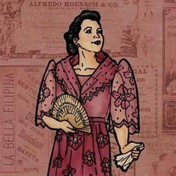

|
Crisostomo Ibarra |
Ibarra is a young, wealthy mestio who has recently returned to the Philippines from seven years of study in Europe. He is smart, well respected, and very idealistic. |
 |
Maria Clara |
She is a women of high social status and is believed to be Father Damaso's goddaughter as well as the daughter of Kapitan Tiago |
|
Father Damaso |
He is an elderly, ruthlessly corrupt, and Spanish priest who has spent almost 2 decades residing among the native Filipinos. |
|
Sisa |
She is the mother of Cripsin and Basilio and the wife of Pedro who is also abusing her but does not want to leave him. |
|
Don Anastasio |
He is an old man that is really educated in philosophy and most people know him for that but, uneducated people think he is crazy or "baliw". |
 |
Crispin |
He is the younger brother of Basilio who is studying to be a sexton, or a caretaker of the church. |
|
Basilio |
He is the older brother of Crispin who is also studying to be a sexton, or a caretaker of the church. |
|  |
Dona Consolacion |
An older Filipina woman married to the ensign. Doña Consolación is a brutal, vulgar partner who berates the ensign, engaging him in intense physical fights heard across the town. |
|
Señor Guevara |
An elderly lieutenant of the Civil Guard who deeply respects both Ibarra and the late Don Rafael. |
 |
Don Filipo (Filipo Lino) |
An elderly lieutenant of the Civil Guard who deeply respects both Ibarra and the late Don Rafael. |